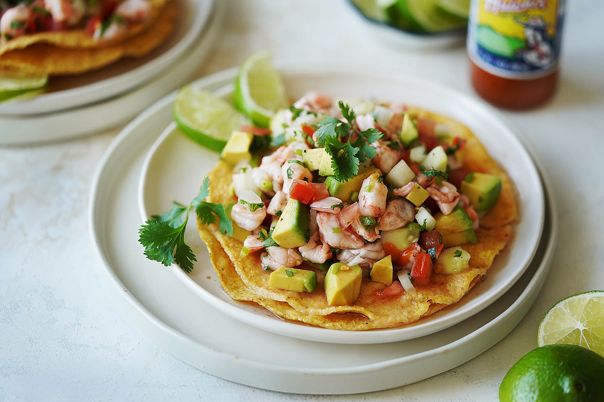

Ceviche
This Sonoran favorite is based on the recipe by Muy Delish

Description
Before serving my mission in Hermosillo, Mexico, I never knew anything about Mexican seafood beyond the occasional fish taco. This ceviche was one of my absolute favorite things to eat in the heat of the Sonoran summer, when temperatures often surpassed 40 degrees C.
Ingredients
- 1 pound raw shimp, peeled and deveined
- Lime Juice - about 5 limes or more as needed
- 1 cucumber - diced into small chunks
- h2 serrano or jalapeno peppers - finely chopped, seeds optional
- 1/3 cup of clamato juice or V8 tomato juice
- Salt and pepper to taste
- 1 Avocado diced into small chunks
- Ketchup according to taste (optional)
Steps
- Cut shrimp into small pieces and place in a plastic or glass container
- Add the lime juice making sure all of the shrimp is covered with it (add more lime juice if necessary).
- Cover shrimp and refrigerate for at least three hours (preferably overnight).
- Mix all vegetables, and set aside in the fridge.
- When the shrimp is cooked through (it will be pink), add the vegetables, clamato juice, salt & pepper and mix well.
- Serve with tostadas, saltines or tortilla chips. Add a little ketchup to personal servings if you decide to use any.